本帖最后由 ggdh 于 2019-9-12 17:08 编辑
GROMACS的并行相比Gaussian等量化软件要复杂的多。GMX手册上有一章Getting good performance from mdrun，介绍了很多基本概念和例子。不过看完后还是一头雾水，不知道怎么才能获得最佳的运行效率。本文对这些信息进行整理和测试，给出一个基本的调试思路。
另外：GROMACS GPU加速性能测试文章(JCC,2019)，这篇文章为了主要目的是比较显卡的性价比，所有的测试都是aggregate performance，也就是所有的GMX任务都用1个Rank，一块显卡跑。如果有N个显卡，就跑N个任务，然后把总的ns/day数加起来。这样其实无从知道Gromacs的并行效率。不过这篇文章也说了：“On single-socket nodes with one GPU, using a single rank with as many OpenMP threads as available cores (or hardware threads) is usually fastest”。那么其他情况下gromacs的并行情况如何呢？
最后，这篇文章长而且复杂，
没有耐心的同学可以直接看第四部分：结论——简单粗暴版，然后可以用第五部分的实用测试命令测试你将要跑的体系，选出最优条件，
需要购机的同学可以直接看第四部分：结论——给购机同学的建议。
使用超算中心同学可以直接看第四部分：结论——给使用超算中心同学的建议。
有兴趣知道背后机制的同学可以详细阅读。
一, 先搞清楚几个概念。
a) Rank 和 Thread
Rank大概可以翻译成进程，和Processes等价，Thread就线程。Gromacs可以在线程和进程这两个层面上并行，这两个的区别大家可以参看线程和进程的区别是什么？。一个Rank可以包含多个thread，在Gromacs并行时，如果使用Rank并行，会使用Domain Decompostion把体系切成小块，每块交给一个Rank去算，而在这个Rank中，多个Thread共同处理这一个小块。
b) Gromacs的几种并行方式：
1，外部的mpirun并行（rank级别并行）
需要安装openmpi，编译安装的时候加上-DGMX_MPI=on选项，编译产生的运行程序名默认是gmx_mpi，可以跨节点运行。实现方式是
mpirun -np 4 gmx_mpi mdrun复制代码2，内部thread-mpi并行（rank级别并行）
Gromacs源码包含，编译时候默认支持，无法跨节点并行，无法和上面的mpirun并行同时使用，单节点运行时，比mpirun稍快，实现方式是gmx mdrun -ntmpi 4复制代码3，openmp并行（thread级别并行）
Gromacs源码包含，编译时候默认支持，无法跨节点并行，可以和上面两种MPI并行同时使用，实现方式是
gmx mdrun -ntomp复制代码总结：单节点运行时，通常采用2+3或者只用3的方式运行，运行方式是：
gmx mdrun -ntmpi 4 -ntomp 6 #4个MPI rank, 每个rank 使用6个线程，运行时占用24个核复制代码跨节点运行时，通常采用1+3的方式运行，运行方式是：
mpirun -np 2 gmx_mpi mdrun -ntomp 6复制代码（2个MPI rank, 每个rank 使用6个线程，运行时占用12个核）这里需要注意的是，不同的并行方式下，GMX对显卡的默认利用方式会不一样，从而带来效率的巨大改变，参见下面的d)-4部分
c) Gromacs中主要耗时的两类任务
1，粒子-粒子相互作用（particle-particle, PP）
在实空间中计算原子之间的两两相互作用力，这些作用主要包括两部分：非键原子间短程相互作用（NB），以及成键原子之间的相互作用（BF）。在并行计算时，对于这部分任务采用Domain Decomposition的方法，也就是把整个胞像切蛋糕一样切成小块，每块交给一个Rank，在这个Rank中，几个Thread共同计算这个小块中的PP作用力。这里需要注意的的是，如果你的体系本身就比较小，如果使用的Rank太多，或者不合适，会出现no domain decompostion compatible with the given box 的错误。
2，粒子网格埃瓦尔德（particle-mesh Ewald，PME)
在倒空间中使用FFT对长程作用力进行计算，这里的“长程”和上面的“短程”是由mdp参数中的rcoulomb和rvdw参数决定的。这部分计算在倒空间中进行，不能像实空间中的PP那样，可以切成小块，因此Rank并行效率较低。所以如果总Rank数较少，那么这些Rank可以既做PP任务又做PME任务，随着Rank数的增多，更为合适的做法是分出少量的Rank专门做PME任务（当Rank数超过16之后，Gromacs会自动分配PME Rank，在此之前，可以用-npme 选项手动分配PME Rank数），如果用显卡算PME，目前最多只能分配一个Rank（一块显卡）来做PME计算。
d) Gromacs的显卡加速
1，显卡的并行级别
一个Rank进程不能使用多个显卡，但是多个Rank进程可以使用一个显卡。因此如果电脑上有3块显卡，那MPI进程数(thread-mpi,或者openmpi都可以）起码要到3才能使用这3块显卡。
2，显卡的加速内容
flowchart.png (49.67 KB, 下载次数 Times of downloads: 817)
下载附件 Download
2019-7-10 20:36 上传 Uploaded
此图修改自Gromacs官网，显卡可以代替CPU计算图中的三部分(offloading)，分别是成键原子间的作用力(Bonded F，下文简称BF)，短程非键作用力(Non-bonded F，下文简称NB)，以及长程非键作用（PME，下文简称PME), 前两者也就是前面介绍的PP作用，其中Bonded 目前(2019.3版本)仅支持N卡，其中GPU加速的PME只支持单Rank计算并且mdp参数必须是PME-order=4，还有一些其他限制详见手册。
3，显卡的加速的开启以及查看方法
这3个部分手动切换cpu/gpu在mdrun的选项中分别是-bonded -nb -pme，
如果不清楚显卡执行了哪部分任务，可以在md.log中查看，看到类似下面的描述
Using 4 MPI threads #使用四个MPI rank
Using 10 OpenMP threads per tMPI thread #每个thread-MPI rank使用10个OpenMP thread
On host node02 2 GPUs selected for this run. #使用2个显卡计算
Mapping of GPU IDs to the 4 GPU tasks in the 4 ranks on this node:
PP:0,PP:0,PP:1,PME:1 #2个PP任务分配给id=0的显卡，1个PP任务和1个PME任务分配给id=1的显卡
PP tasks will do (non-perturbed) short-ranged and most bonded interactions on the GPU #PP任务包括了计算大部分Bonded和短程Non-bonded作用
PME tasks will do all aspects on the GPU #PME任务全部在GPU上进行
4，默认利用显卡加速情况
这里单独强调一下默认情况下（就是不额外加控制显卡的参数）显卡会执行哪些任务：
单Rank并行下：
显卡自动执行NB+PME计算，BF交给GPU，如果使用-pme cpu选项强行把PME分配给CPU，那么显卡会自动执行NB+BF计算。
多rank并行下：
显卡会自动执行NB+BF计算，PME交给CPU，此时如果要利用显卡计算PME，必须使用-pme gpu -npme 1 单独分配一个rank来进行PME计算
5，利用显卡加速的5种情况（以及对应的命令行选项）
下面总结一下利用显卡加速的5种情况，
0：不用显卡加速（ -nb cpu -pme cpu -bonded cpu ）
1：用显卡做NB计算（-nb gpu -pme cpu -bonded cpu ）
2：用显卡做NB+PME计算（-nb gpu -pcme gpu -bonded cpu ）多rank并行还需加上 -npme 1
3：用显卡做NB+BF计算（-nb gpu -pme cpu -bonded gpu ）
4：用显卡做NB+PME+BF计算（-nb gpu -pme gpu -bonded gpu ）多rank并行还需加上 -npme 1
注意到这里我们只有用显卡加速了NB部分，才能进一步加速BF和PME部分。
二, 测试条件
a) 硬件环境
cpu：XEON E5-2699V4 * 2，显卡：华硕TURBO-RTX2080-8G X 2 or 耕升GTX-1080 追风 X 2，内存：128G，主板：msi X10dai
b) 软件环境
操作系统：CentOS7，CUDA版本：10.2， gcc版本：7.3.1，gromacs版本：2019.3安装方法参考：GROMACS的安装方法
c) 测试方法
测试系统：Gromacs官网上的ADH例子中的adh_cubic
体系大小：13.4W个原子，11*11*11nm的盒子
测试命令：
gmx mdrun -ntmpi 4 -ntomp 6 -s ADH.tpr -cpt 1440 -nsteps 15000 -resetstep 5000 -v -noconfout -gpu_id 0 -pme gpu -npme 1 -bonded gpu -nb gpu -gputasks 0001 复制代码
下面对用到的mdrun的一些选项进行做说明：
-ntmpi X 使用X个rank进行并行
-ntomp X 每个rank使用X个openmpi线程
-cpt X 间隔X分钟写入checkpointfile
-nsteps X 一共跑X步md
-resetstep X 在第X步时开始重新计时（因为头几千步，gromacs会进行自动调试，此时速度还不稳定）
-gpu_id 01 使用id为X和Y的显卡计算，比如-gpu_id 0123，说明使用4块显卡进行计算, -gpu_id 12，使用第二块和第三款显卡。
-pme cpu/gpu 使用cpu或gpu进行pme计算
-nb cpu/gpu 使用cpu或gpu进行nb计算
-bonded cpu/gpu 使用cpu或gpu进行bonded force计算
-npme X 在多rank并行情况下，使用X个rank进行pme计算
-gputasks 0011 在多rank并行情况下，每个rank分配给哪块cpu，比如8 Rank并行时（-ntmpi 8），而我有3块gpu， 那么-gputasks 00001122 表明前4个Rank分给第一块显卡，中间两个Rank分给第二块显卡，最后2个Rank分给第三块显卡，这个选项不能和-gpu_id选项同时出现。至于这些Rank哪些是pme Rank 哪些是pp Rank则可以用-ddorder选项控制，详见手册中-ddorder选项的说明，默认的是pp Rank在前pme Rank 在后。
三, 测试内容
a) 单Rank，单显卡
这时候可以调节的参数有openmp的核数-ntomp，以及是否把BF(Bonded F)，NB(Non-bonded F)，PME任务分配给显卡计算。
gmxbench1.png (67.31 KB, 下载次数 Times of downloads: 855)
下载附件 Download
2019-8-7 22:42 上传 Uploaded
图一：计算速度随openmp线程数的变化情况，图中的5条曲线分别对应于把不同的任务分配给GPU时的情况
gmxbench3.png (31.24 KB, 下载次数 Times of downloads: 806)
下载附件 Download
2019-8-9 21:36 上传 Uploaded
表一：从md.log中提取出的具体项目的耗时情况，第一行中的Tn表示线程数，红色加粗的是NB+BF部分的耗时，蓝色加粗的是PME部分的耗时。
分析：
1）BF(bonded force)部分的计算是否分配给GPU影响不大，显卡任务没饱和时，BF分给显卡较快，显卡任务饱和了以后BF分给CPU较快。
2）在拥有一个比较好的显卡情况下，把PME部分分配给显卡可以显著提高计算速度。
3）PME分配给显卡后，计算速度在10个openmp线程左右达到了上限，这是因为GPU的运算成为瓶颈。原因如下：对比表一中的第一列（T2 NB+PME）和第二列（T40 NB+PME），可以发现随着并行线程数的增加，主要耗时项目由Force（这是CPU计算BF的耗时）变成Wait GPU NB local（这是等待GPU计算NB的耗时）。
4）PME分配给CPU的情况下，计算速度在10个线程前快速上升，之后上升速度减慢，到30个线程时达到上限。根据表二中的第三列(T40 NB+BF)我们发现此时CPU计算PME的任务(PME mesh)是计算的瓶颈。
5）在不使用GPU的情况下，通过表一的最后第四列可以发现，PP的计算是最耗时的项目（Force），其次是PME的计算（PME mesh），但是计算PP的并行效率高，所以到40核的时候（第五列），PME反而成为最耗时的项目。
b) tMPI多Rank，单显卡
gmxbench2.png (64.81 KB, 下载次数 Times of downloads: 807)
下载附件 Download
2019-8-9 17:54 上传 Uploaded
图二：多Rank并行下，计算速度随openmp线程数的变化情况。
分析：
单线程使用GPU计算NB+PME时，运行速度最快，此时CPU并行在10线程左右达到上限。显卡成为了运算的瓶颈，那么还剩下的34核能否进一步提高计算速度？
在显卡成为瓶颈的情况下想要进一步提高运算速度，必须把显卡的PME任务分给CPU（上面说过NB任务不能单独分给CPU）。
在上面单线程情况下，用CPU计算PME时，30核就基本达到速度上限，此时运算速度并不能超过GPU计算PME的速度。
那么使用多rank的情况下，能否提高CPU计算PME的并行效率呢？
答案是否定的，经过我的测试，4 Rank，每Rank10线程和1 Rank，40线程的运行PME mesh的时间是基本相当的。
不仅如此，多Rank情况下还会有额外的耗时，包括domain decomposition (DD)的耗时，多Rank共用一块显卡造成的效率下降，PP rank 和PME rank 之间的负载不平衡，DD 造成的负载不平衡。最后结果如图二所示，在一块显卡的情况下使用多Rank并行，并不能带来运算速度的提升。4*10=40核的运算速度反而没有1*10=10核的运算速度快。
因此：单显卡使用多Rank时，多Rank对PME的运算效率不会提高，同时多Rank并行会带来一堆额外的耗时项目和负载不平衡，最终会带来速度的下降。
c) tMPI 多Rank，双显卡
gmxbench3.png (68.61 KB, 下载次数 Times of downloads: 825)
下载附件 Download
2019-8-9 19:18 上传 Uploaded
图三：多Rank并行下，使用2块显卡的计算速度随openmp线程数的变化情况。
分析：
1）多Rank下，不使用GPU计算PME的情况： 图三中的黄线和深蓝线，这是在运行gmx mdrun时不额外加“-pmp gpu -npme 1”时的默认结果。此时使用cpu计算pme，拿两块显卡去计算NB和BF，可以看到此时cpu计算PME成为了瓶颈，所以两块显卡算NB，反而还没有一块显卡同时计算NB+PME快。不仅如此，更为荒谬的是两块显卡算NB+BF时还没有一块显卡算NB+BF快（对比图三种的黄线最后一个点<50ns 和图一中黄线中间的点>70ns)。这应该是在使用显卡算NB后，CPU计算PME成为了瓶颈，而PME多rank并行的效率并没有提高，加速多Rank运行时各种负载不平衡带来的消耗。
2）多Rank下，使用GPU计算PME的情况：
即使加上“-pmp gpu -npme 1”后，在2 Rank情况下使用1块显卡计算PME，1块显卡计算NB，速度竟然没有只使用1块显卡同时算PME和NB快。通过观察md.log中的结果可以发现，耗时项最大的是PME wait for PP *，大概意思就是一块显卡PME算好了，等另外一块显卡算NB等了半天。还可以看到log文件中“Average PME mesh/force load: 0.738”这样的描述，也就是PME/PP负载不平衡以及Rank之间通信造成了效率低下。在4 Rank下，拿出1个Rank做PME，以及3个Rank做PP后，PP/PME负载不平衡的情况情况得到了改善，此时两块显卡的运算速度也终于略微超过一块。
3）多Rank下GPU的任务分配：
默认情况下Rank任务是平均分配给GPU的，比如这里我有4个Rank任务，2个GPU，那么平均一个GPU分到2个Rank，由于3个Rank是PP，一个Rank是PME，最后结果就是一个显卡计算2个PP任务，一个显卡计算1个PME+1个PP任务。此时可以用-gputasks 选项分配如何把这4个rank分给GPU，这4个rank中，前3个是PP rank，最后一个是PME rank，因此如果是"-gputasks 0001" 指定前三个PP rank分给0号gpu，最后一个PME rank分给1号gpu，而"-gputasks 0011"则相当于默认情况。本次测试中两种请
d) N任务，N显卡
上面的测试表明，两块显卡相对于一块显卡的提升非常有限。如果装了两块显卡，想有效的利用这两块显卡，最好的办法是每块显卡跑一个独立gmx任务。问题是，这两个独立的gmx会相互干扰么？经过测试，结论是：cpu核数足够的情况下两块显卡单独运行两个Gromacs任务完全没有影响。JCC,2019的那篇文章中也可以看到，N显卡相对于单显卡的速度几乎就是N倍。
e) GTX1080的表现
1080Ti.png (136.15 KB, 下载次数 Times of downloads: 811)
下载附件 Download
2019-8-15 09:51 上传 Uploaded
图四：2块1080显卡的测试情况，其中图标R2:NB+PME的意思是使用2个Rank，用GPU算NB和PME。
分析：
1080和2080相比有下面一些相同和不同点
相同点：
1）单Rank下，显卡计算NB+PME时，CPU在10核计算速度达到饱和。
2）单显卡下，双Rank比单Rank慢
3）双显卡下，只有使用4Rank，且用显卡计算NB+PME时，速度才能略微超过单显卡情况
不同点：
1）单Rank下，随着openmp threads数量增多，显卡计算NB+BF的速度最终超过了NB+PME，这是因为1080性能略差，这样CPU并行数量上去之后，CPU计算PME的速度最终能够超过GPU计算PME的速度。
f) 关于PME tuning
PME部分的计算其实还有很多可以调控的地方，我没有深入研究，这里简单介绍一下：
1）tunepme，这是mdrun的选项，默认为开启，在CPU计算NB，GPU计算PME的情况下，为了使两边计算负载平衡，达到同步完成，gromacs采用了PME调控功能，其原理是增大rcoulomb，同时增加Fourierspacing，也就是减少FFT 格点数，使将使得更多的粒子长程作用从PME部分划分给NB部分。从而减少PME的计算量。所有我们在mdp文件中可以将rcoulomb和Fourierspacing 设小一点（比如0.8和1），让mdrun自行调控。
pmetune.png (54.91 KB, 下载次数 Times of downloads: 814)
下载附件 Download
2019-8-15 10:53 上传 Uploaded
2）vdwtype，这是mdp参数，如果设为pme，那么会使用PME计算长程VDW作用，不过如果这样做，无法使用GPU进行PME计算，这就相当于把更多的任务分配给了PME，因此，如果GPU很次，可以尝试这种做法。
3）pmefft，这是mdrun的选项，可以把PME的3D FFT单独分配给CPU算，而其他部分任然交给GPU算，据说用比较次的GPU搭配很好的CPU可以用这个选项，但是我尝试之后并没有得到积极的结果。
4）gmx tune_pme，这是gmx的一个程序，可以系统的优化PME参数，在给定总的Rank数情况下优化计算PME的rank数，以及rcolulomb和Fourierspacing的参数。比如：
gmx tune_pme -mdrun 'gmx mdrun -pme cpu' -ntmpi 1 -ntomp 44 -rmax 2 -rmin 0 -ntpr 10 -gpu_id 0 -r 2 -fix 0 -s c05.tpr复制代码的意思是使用cpu算PME(-pme cpu),一共只使用1个tmpi rank(-ntmpi 1),对10个不同的rcoulomb设置进行测试(-ntpr 10)，其中rcoulomb最大值是2(-rmax 2), 最小值是tpr中的设定值(-rmin 0), 不使用独立的pme rank (-fix 0)，使用1个id为0的gpu加速计算(-gpu_id 0), 每个测试运行两遍(-r 2)
gmx tune_pme -mdrun 'gmx_mpi mdrun' -np 20 -ntomp 2 -min 0.25 -max 0.5 -rmax 1.5 -rmin 0 -ntpr 5 -gpu_id 0 -r 2 -resetstep 3000 -steps 3000 -s c05.tpr复制代码使用20个openmpi rank(-np 20), 每个rank使用2个openmp thread, 其中PME 线程数从20*0.25=5个(-min 0.25) 测试到 20*0.5=10个 (-max 0.5)，每次测试运行3000步之后开始计时（-resetstep 3000), 计时时间为3000步(-steps 3000)。
该命令的更多选项见手册.
g) cpu频率的影响
gpuclock.png (74.14 KB, 下载次数 Times of downloads: 810)
下载附件 Download
2019-8-16 22:29 上传 Uploaded
图五：单Rank，使用显卡跑NB+PME任务时，CPU频率对运算速度的影响。分析：
因为我们的结论是单Rank单显卡跑MD任务效率最高，那么剩下的问题就是CPU的频率以及核心数是如何影响运算速度的。
根据图五的结果我们可以做以下几点分析：
1）cpu高频时，能用更少的核的达到速度上限。
2）cpu低频时，10核之前并行效率高，10-20核并行效率低，20核之后并行效率几乎没有。
3）cpu频率的高低，会影响到速度上限的高低。
四, 结论：
抽象版：
影响Gromacs效率的关键是下面3个平衡：
1，PME-NB运算任务之间的平衡。
1，CPU-GPU负载平衡。
2，多Rank并行时，Rank之间的负载平衡。
我们主要通过决定把多少资源（GPU，CPU，Rank）分配给PME和NB任务来实现上面的平衡。
简单粗暴版：
单显卡情况下：
只用1个Rank（运行时单进程多线程并行），如果显卡足够好，把PME任务给显卡，openmp theads 12个左右；命令如下：
gmx mdrun -pin on -ntmpi 1 -ntomp 12 -pme gpu XXX.tpr复制代码如果显卡较差，把PME任务给CPU，openmp theads 越多越好（一般超过20，计算速度达到上限），命令如下：
gmx mdrun -pin on -ntmpi 1 -ntomp 20 -pme cpu XXX.tpr复制代码多显卡情况下：
最好是给每个显卡一个Rank，单独跑一个Gromacs任务，命令如下：gmx mpirun -ntmpi 1 -ntomp 12 -gpu_id 0 -s abc.tpr #使用0号gpu计算abc.tpr
gmx mpirun -ntmpi 1 -ntomp 12 -gpu_id 1 -s xyz.tpr #使用1号gpu计算abc.tpr复制代码如果非要用多个显卡跑一个MD任务，请把一个PME rank分配给显卡，其他的3个PP Rank分配给其他的显卡，命令如下：
gmx mdrun -pin on -ntmpi 4 -ntomp 8 -pme gpu -npme 1 XXX.tpr复制代码
给购机同学的建议：
由于最高的效率的资源利用方式是单显卡跑任务，所以一个机器里面装多显卡的目的主要是为了同时跑多个gromacs任务（并且不占地方，便于操作），这时候需要考虑的是cpu核心数/gpu的比例，根据本次测试的结果，在GPU跑PME+NB，对于1080显卡，cpu 8核就能达到速度上限，对于 2080显卡，cpu 10 核就能达到上限，这说明越是好的显卡，也需要更多/更快的cpu核心数与之配套，才能充分发挥这块显卡的功能，另外根据第三部分g）CPU频率的测试可以发现，cpu10核之内thread并行效率高，10-20核并行效率低，20核之后并行效率几乎没有，因此如果只配一块显卡，我们有一个核心数较少（8-12）频率较高的CPU就够了，比如桌面级别的I7，I9，如果要装多显卡的机器，那么选择cpu的时候最好满足10核左右/1块显卡比例（如果cpu主频够高，可以适当降低核心数要求），在此基础上，利用公式：cpu频率* min(显卡数*10，cpu核心数) / price，来计算搭配cpu的性价比。
给使用超算中心同学的建议：
对于slurm系统，你在用sbatch提交任务的时候，不管它的节点上有几块显卡 ，你每次提交任务的时候一律用从0开始，一次用一块显卡算就是-gpu id 0。一次用两块显卡算就是-gpu_id 01, 这是因为大多数slurm系统都用cgroup管理资源。最大的资源的利用仍然是一次使用一块gpu，一个提交脚本申请一个gpu，提交一个任务即可，至于配合多少cpu，偷懒的话直接设成10，否者用下面一节测试脚本中的多GPU多任务情况的命令测试一下，需要多少CPU核数够。如果GPU节点上有多块显卡而又强制是exclusive模式（独占节点模式），那么应当在一个提交脚本中写入多个任务，或者使用多显卡算一个任务（4 Rank并行，PME分配给GPU）（待补充）
五, 测试脚本
最后附上本次测试用到的脚本：gmxbench.sh
安装之后（放到PATH路径下，加可执行权限），运行方法如下：
gmxbench.sh -r "1 2 4" -T "2 2 10" -g "0 01" -G "0 1 2 3 4" -a "-pin on" -s 20000 -S 10000 XXX.tpr复制代码
意思是，测试rank 为 1 2 4 时候的情况 (-r "1 2 4")
对于每种rank设置，测试openmp 线程为“2 4 6 8 10”时候的情况(-T "2 2 10")
对于上面每种设置，分别测试只使用0号GPU和同时使用01号GPU的情况(-g "0 01")
对于上面每种设置，分别测试gpu分配任务为“0 1 2 3 4”时候的情况，这里的代号和第一部分中的“显卡加速的5种情况”中的编号对应(-G "0 1 2 3 4")
每次测试运行20000步(-s 20000)，从10000步开始计时(-S 10000)，注意-S如果设置过小（比如小于5000，可能会因为还未完成pme tune 而出错）
最后额外添加关键词“-pin on” (-a "-pin on")另外可以输入gmxbench.sh -h 查看帮助
实用测试命令：
根据我们的上面的结论，其实不用做那么多测试，下面是实用的测试命令
单GPU情况：
gmxbench.sh -r 1 -g 0 -G "2 3" -a "-pin on" -s 20000 -S 10000 XXX.tpr 复制代码这里主要区别把PME分给CPU快还是GPU快，这里不设置openmp thread 会默认使用最大thread
多GPU单任务情况：
gmxbench.sh -r "1 4" -g "0 01" -G "2 3" -a "-pin on" -s 20000 -S 10000 XXX.tpr复制代码这里主要区别把PME分给CPU还是GPU以及是使用单Rank快还是4 Rank快，以及是用一块gpu快还是2块gpu快。。。这里不设置openmp thread 会默认使用最大thread
多GPU多任务情况：
gmxbench.sh -r "1" -g "0" -G "2" -T "6 2 20" -a "-pin on" -s 20000 -S 10000 XXX.tpr复制代码这里主要是看使用一个GPU算一个任务时，用多少CPU能把GPU”喂饱“，因此我们固定其他参数，只扫描openmp线程，从6开始，每次增加2核，扫描到20（-T 2 1 20）
测试完成后自动给出耗时统计，如果中途意外中断了可以重新运行相同的命令，会自动续算。
本人做动力学经验不多，希望各位动力学大佬提出宝贵建议和补充！！
给师傅打call
这个是不是可以写篇benchmark的文章了？
本帖最后由 308866814 于 2019-8-16 14:08 编辑
您好，怎么查看rank数？只有1个rank的情况下，能否装两个显卡，每个显卡各跑一个单独的任务？另外，上述测试结果是否开启了HT？谢谢！
过段时间我也写一篇V100计算卡和2080ti游戏卡的速度实测对比。
本帖最后由 ggdh 于 2019-8-16 19:30 编辑
308866814 发表于 2019-8-16 14:07
您好，怎么查看rank数？只有1个rank的情况下，能否装两个显卡，每个显卡各跑一个单独的任务？另外，上述测 ...
Rank数不是个硬件条件，而是你运行gmx mdrun时候手动指定的。
比如
mpirun -np 4 gmx_mpi mdrun 指定了4个openmpi rank
gmx mdrun -ntmpi 8 指定了8个tmpi rank
详见第一节的b)部分，Gromacs的几种并行方式。
本人机器没有关闭HT，
但是测试中使用的核数并没有超过物理核数。
我也测过使用HT的情况，在我机器的条件下，速度基本不会快
ggdh 发表于 2019-8-16 19:24
Rank数不是个硬件条件，而是你运行gmx mdrun时候手动指定的。
比如
mpirun -np 4 gmx_mpi mdrun 指定了 ...
多谢您的回复，我也发现超过物理核心之后，速度不仅不能加快，反而有可能降低。
简单实用，好文！
2）vdwtype，这是mdp参数，如果设为pme，那么会使用PME计算长程VDW作用，不过如果这样做，无法使用GPU进行PME计算，这就相当于把更多的任务分配给了PME，因此，如果GPU很次，可以尝试这种做法。
我觉得也不能简单的这么说 vdw虽然cutof之后很小 但如果消除掉的话 总体来说吸引作用就少了很多 对自由能计算任务会带来1kcal／mol左右的误差，如果不想后期修正 可以用vdw=pme来避免这个问题
大佬，我想问下，我的32核服务器上1080和2080各装了一块，按1进程12线程分别运算时，他们的使用率分别是60多和40多，请问gpu使用率和速度上限有直接关系吗
@ggdh，大佬，您好，主板：超微X10DAL-i，显卡：映众gaming GeForce RTX 2080 *2，想一个任务充分利用两张显卡的话，用交火桥连器接起来有效果吗？没有经验，跟您讨教一下经验。
qinzhong605 发表于 2019-12-5 09:43
@ggdh，大佬，您好，主板：超微X10DAL-i，显卡：映众gaming GeForce RTX 2080 *2，想一个任务充分利用两张 ...
官网上好像没讨论交火。可能是不用到这一块。
您好，请问“对于 2080显卡，cpu 10 核就能达到上限”这种现象是否由模拟体系大小导致？换言之，如果换用更大的模拟体系，10个以上核心的优势会不会更明显？
StormSpirts 发表于 2019-12-18 00:42
您好，请问“对于 2080显卡，cpu 10 核就能达到上限”这种现象是否由模拟体系大小导致？换言之，如果换用更 ...
有可能，不过openmpi并行往10核以上走效率也不会提高多少了
很有用的分析，强！
请问mpirun并行版只要加上了-pme -pcme -bonded这些就会报错说相关指令无效，但是用gmx_mpi mdrun -deffnm npt -ntomp 10-pin on 计算效率又特别低是什么原因（50000原子 7ns/day)
王寓于 发表于 2020-4-4 16:58
请问mpirun并行版只要加上了-pme -pcme -bonded这些就会报错说相关指令无效，但是用gmx_mpi mdrun -deffnm ...
不是多机器并行不要编译mpi版本，用gmx built-in mpi，cmake时不要打开那个选项，结果是：bin文件里是gmx不是gmx_mpi。你再仔细看一楼开头关于thread和rank的知识
柠檬好酸 发表于 2020-4-13 13:43
不是多机器并行不要编译mpi版本，用gmx built-in mpi，cmake时不要打开那个选项，结果是：bin文件里是gmx ...
多谢
王寓于 发表于 2020-4-4 16:58
请问mpirun并行版只要加上了-pme -pcme -bonded这些就会报错说相关指令无效，但是用gmx_mpi mdrun -deffnm ...
命令错了，原文笔误别直接复制
感谢楼主！
我有一个不成熟的想法 3970x（24核 但主频有3.8）+（3*2080显卡+1*2080Ti），平时单独跑四个任务， 大体系需要时4rank并行，分出2080Ti这个rank专门算PME，这样是否可以提升计算速度上限（看你文章双显卡时是pme达到上限了）
dgdrtd456 发表于 2019-8-16 16:59
过段时间我也写一篇V100计算卡和2080ti游戏卡的速度实测对比。
大佬，你的测试对比出来了没， 求链接
老师您好，看了您的文章，想请教您一下，我的电脑cpu是6核的，gpu是rtx2080，现在还想装一个闲置的rtx2060，分开跑不同的任务，请问老师这个cup+gpu这样合适吗，谢谢老师
我的操作命令直接是gmx_mpi mdrun ***，然后运行情况如图所示，机子是有两块GPU的，我该怎么操作才能利用好计算机性能呢？试了mpirun -np 2 gmx_mpi mdrun 命令，直接就无法运行。请各位大佬指导一下
2.png (16.61 KB, 下载次数 Times of downloads: 395)
下载附件 Download
2020-12-31 15:41 上传 Uploaded
3.png (25.3 KB, 下载次数 Times of downloads: 371)
下载附件 Download
2020-12-31 15:41 上传 Uploaded
1.png (13.8 KB, 下载次数 Times of downloads: 376)
下载附件 Download
2020-12-31 15:41 上传 Uploaded
是否是因为当初装软件时装的多节点并行版本，也就是楼主说的第一种并行方式。然而实际运行为单服务器，导致了无法自由设置MPI个数？那这种问题大家有没有解决方法呢？提前谢谢各位老师
rice 发表于 2020-12-31 16:10
是否是因为当初装软件时装的多节点并行版本，也就是楼主说的第一种并行方式。然而实际运行为单服务器，导致 ...
使用
mpirun -np X
设置mpi个数为X
ggdh 发表于 2021-1-1 22:13
使用
mpirun -np X
设置mpi个数为X
不知道为啥，按您的方法还是不能正常运行。后来我重新装了个单节点的2019.6版本,1 MPI +12OpenMP ，比之前的1 MPI +24OpenMP居然还快不少。确实单GPU分开跑任务性价比较高
注：2018.8版本的mdrun没有-bonded选项
感谢分享
简单实用，好文！
单节点多rank速度慢一倍。
单机双CPU算几个节点？
b3115321 发表于 2021-5-2 18:50
单节点多rank速度慢一倍。
单机双CPU算几个节点？
1个
您好，我在使用您的脚本bench时出现了下面的错误提示。
File "gmxbench.sh", line 2
if [ $# -lt 1 ]; then
^
SyntaxError: invalid syntax
TAN小白 发表于 2021-5-14 11:39
您好，我在使用您的脚本bench时出现了下面的错误提示。
File "gmxbench.sh", line 2
if [ $# -lt 1 ] ...
1.确定你是bash环境
2.对脚本使用dos2unix
3.尝试使用bash gmxbench.sh的方式运行脚本
ggdh 发表于 2021-5-14 21:53
1.确定你是bash环境
2.对脚本使用dos2unix
3.尝试使用bash gmxbench.sh的方式运行脚本
感谢您的解答。
我用的版本是gmx2018.8。运行命令gmxbench.sh -r 1 -g 0 -G "2 3" -a "-pin on" -s 20000 -S 10000 adh.tpr时，出现了下面的错误提示：
Error in user input:
Invalid command-line options
In command-line option -s
File
'/home/Tan/simulation/GMX/benchmark/ADH_bench_systems/ADH/adh_cubic/20000/20000'
does not exist or is not accessible.
The following extensions were tried to complete the file name:
.tpr
Unknown command-line option -bonded
In command-line option -pin
Invalid value: on -s
TAN小白 发表于 2021-5-19 08:51
感谢您的解答。
我用的版本是gmx2018.8。运行命令gmxbench.sh -r 1 -g 0 -G "2 3" -a "-pin on" ...
用2019版把，2018版好像不知道-bonded选项
ggdh 发表于 2021-5-21 17:56
用2019版把，2018版好像不知道-bonded选项
非常感谢
请问楼主和其他老师们，我用slurm系统向超算（一个节点共4cpu、32核、4dcu，cpu是海光的）提交gmx任务，作业脚本如下（有部分省略）
#! /bin/bash
#SBATCH -p normal
#SBATCH -N 2
#SBATCH --ntasks=64
#SBATCH --ntasks-per-node=32
#SBATCH -J run
#SBATCH --gres=dcu:4
#SBATCH --mem=220G
mpirun -np 16 gmx_mpi mdrun -deffnm nvt1 -v -nb gpu -npme 8 -pme cpu -ntomp 4
结果是：node1如下图所示，只用了16核（对应-np 16），而node2一核都没用。
202105291920156643..png (124.62 KB, 下载次数 Times of downloads: 409)
下载附件 Download
node1 top
2021-5-29 19:20 上传 Uploaded
202105291927431804..png (13.37 KB, 下载次数 Times of downloads: 419)
下载附件 Download
log
2021-5-29 19:27 上传 Uploaded
我有几个问题想请教：1.#SBATCH参数中的ntasks是对应n个线程吗？2.为什么会出现图片中情况，#SBATCH参数和-np -ntomp该怎么设置才能达到每节点8MPI进程*4OpenMP线程并行运行（用满32核）的目的呢？感谢楼主了！
你好 老师 简单的多肽在水中，总共5千多原子，在学校的超算平台上
命令是gmx_mpi mdrun -deffnm md -ntmop *
ntmop 分别设20、10、5、1时，GPU 利用率分别是4%、6%、10%、17%
cpu是100%
加 ntmpi 后，提示Fatal error:
Setting the number of thread-MPI ranks is only supported with thread-MPI and GROMACS was compiled without thread-MPI
想问下，是cpu有限制吗，还能有啥办法提高gpu利用率吗，谢谢啦！
有个问题，显卡计算的时候如果是RTX A6000或者老的Quadro产品线的专业卡，通过NVlink连接之后对于多卡单任务速度是否有提升？再就是显存位宽对于速度是否有影响？
谢谢分享，正好解决手头的问题
感谢指导，非常有帮助
有一个小地方不明白想请教一下，”五，测试脚本“中多了一个关键词”-pin on“，增加这个关键词之后计算速度有明显提升，但前面的测试却并未使用，是使用这个关键词会造成什么问题吗？
官方手册上说这个关键词是用来线程关联的，没太懂。。。后续我计划用同一台机子上的两块gpu分别跑任务，到时候试试
shadowcrystal 发表于 2021-12-29 15:26
感谢指导，非常有帮助
有一个小地方不明白想请教一下，”五，测试脚本“中多了一个关键词”-pin on“ ...
据我自己的感受，-pin on对于单卡单任务，有提升作用，此时是否需要-pinoff都不重要。
考虑试试-update gpu
牧生 发表于 2021-12-29 16:59
据我自己的感受，-pin on对于单卡单任务，有提升作用，此时是否需要-pinoff都不重要。
考虑试试-updat ...
感谢，-update gpu试了一下测试用体系，显著提升。但我目前的模拟体系含有虚原子（tip4p）暂时不支持orz
再次感谢
gmx mdrun -ntmpi 1 -ntomp 12 -gpu_id 0 -s abc.tpr #使用0号gpu计算abc.tpr
gmx mdrun -ntmpi 1 -ntomp 12 -gpu_id 1 -s xyz.tpr #使用1号gpu计算xyz.tpr
在双cpu工作站，这样提交，两个任务都用同一个cpu，用1号gpu的xyz的任务明显速度慢。
请问，有没有类似的参数能指定cpu_id ? 从而把xyz任务分给第2个cpu。
lanthanum 发表于 2022-3-4 23:16
gmx mdrun -ntmpi 1 -ntomp 12 -gpu_id 0 -s abc.tpr #使用0号gpu计算abc.tpr
gmx mdrun -ntmpi 1 -ntomp ...
不是cpu_id，是用-pinoffset。结合htop命令，试一下这个参数怎么用即可。
lanthanum 发表于 2022-3-4 23:16
gmx mdrun -ntmpi 1 -ntomp 12 -gpu_id 0 -s abc.tpr #使用0号gpu计算abc.tpr
gmx mdrun -ntmpi 1 -ntomp ...
最近要公布的一个gmx自动运行小脚本，其中对并行参数定义的解释，参考：
md_nt='32' # Number of threads used when running mdrun (excluding 'em' and 'rerun'). It cannot be greater than the number of CPU logical cores of the current host.
multi_gpu='0' # Whether to use multiple GPUs to run 1 mdrun task (excluding 'em' and 'rerun'). If enabled, the 'md_nt' option will be ignored.
ntmpi='8' # Number of MPI threads (RANKs) used when running 1 mdrun task with multiple GPUs.
ntomp='6' # Number of OpenMP threads used when running 1 mdrun task with multiple GPUs. The value of [ntmpi*ntomp] cannot be greater than the number of CPU logical cores of the current host. It is generally not recommended to use the extra logical cores obtained by Hyper Threading (HT) technology.
gputasks='' # MPI RANKs of each GPU. When this option is enabled at the same time as 'gpu_id', this option will be ignored. Note: the last RANK is PME RANK and the rest are PP RANKs. This option can be used for manual control of GPU load balancing, for example: ntmpi=8, gputasks=00000111, means The first 5 RANKs run with GPU 0, and the last 3 RANKs run with GPU 1.
gpu_id='0' # ID of GPU which used in MD simulation tasks。If more than 1 is used, write out the GPU IDs side by side. For example, '01'. Note: if the current host has multiple GPUs with different architectures, the GPU ID detected by GMX may not be consistent with the GPU ID in the GPU driver, instead, it is sorted by the value of "compute_cap" from large to small according to the "fastest first" rule.
update_gpu='1' # Whether to add the '-update gpu' option in mdrun (excluding 'em' and 'rerun') command when running 1 mdrun task with 1 GPU. This option is not supported if a 4-point water model is used.
pinoffset='0' # Value of '-pinoffset' option in mdrun (including 'em' and 'rerun') command, default value is 0. When you need to run 2 or more GMX tasks in parallel in the current host, you can define other values by yourself. For example, in a host with dual 24c&48t CPUs and dual GPUs, for task 1: md_nt=24, multi_gpu=0, gpu_id=0, pinoffset=0; for task 2: md_nt=24, multi_gpu=0, gpu_id=1, pinoffset=48.
pinstride='0' # Value of '-pinstride' option in mdrun (including 'em' and 'rerun') command, default value is 0, GMX will determine the appropriate value by itself. If there are no special requirements, it is strongly recommended not to change this option to other values!复制代码
snljty 发表于 2022-3-5 00:00
不是cpu_id，是用-pinoffset。结合htop命令，试一下这个参数怎么用即可。
谢谢。
Entropy.S.I 发表于 2022-3-5 02:38
最近要公布的一个gmx自动运行小脚本，其中对并行参数定义的解释，参考：
谢谢。
谢谢！解决大问题！
请问老师，昨天按照知乎上的教程安装了GMX2020的版本，当时没有添加 =GPU，可以安装后添加吗 ？还是需要重新安装一次 ？
panyongcai 发表于 2022-4-15 09:30
请问老师，昨天按照知乎上的教程安装了GMX2020的版本，当时没有添加 =GPU，可以安装后添加吗 ？还是需要重 ...
重新在cmake那一步进行就可以了，也不过就几分钟罢了
牧生 发表于 2022-4-15 09:39
重新在cmake那一步进行就可以了，也不过就几分钟罢了
谢谢。
你好，请问我用-nb gpu无法调用GPU该怎么解决，提示Nonbonded interactions on the GPU were required, but not supported for these
simulation settings. Change your settings, or do not require using GPUs.
本帖最后由 Timeless 于 2022-8-31 14:21 编辑
请问大家有没有遇到，单个服务器上同时运行多个gmx任务时，出现任务之间抢占cpu的现象，最后每个任务使用的cpu数量会降为原来的一半，最后每个任务的速度都会下降（服务器cpu未使用完），需要添加什么参数让每个任务以cpu独占的方式运行吗？运行命令如下：
gmx mdrun -deffnm md_0_10 -gpu_id 1 -v -nb gpu -pin on -bonded gpu -ntmpi 1 -nt 4 -pme gpu
Timeless 发表于 2022-8-31 14:18
请问大家有没有遇到，单个服务器上同时运行多个gmx任务时，出现任务之间抢占cpu的现象，最后每个任务使用的 ...
问题已解决。
Timeless 发表于 2022-8-31 15:21
问题已解决。
请问怎么解决的啊？我也遇到了同样的问题。我是双显卡，任务之间总是相互影响。
wasngsimin 发表于 2023-2-23 08:22
请问怎么解决的啊？我也遇到了同样的问题。我是双显卡，任务之间总是相互影响。
解决了：http://bbs.keinsci.com/thread-25510-1-1.html
老师们遇到过1 ranks报错的情况没，gromacs2022.5，从2020 -ntmpi 1 -ntomp 8妥妥运行
楼主你好，感谢分享，请问我的输出结果是这样的，测试结果对比之前我使用 gmx mdrun -deffnm md -nb gpu -update gpu的速度要快5%，一天能多跑15ns，想请问改如何根据测试结果取对应修改mdrun指令？
q11pet28abl21 发表于 2023-5-23 14:21
楼主你好，感谢分享，请问我的输出结果是这样的，测试结果对比之前我使用 gmx mdrun -deffnm md -nb gpu -u ...
您好，本人小白，我直接运行了楼主的命令
bash gmxbench.sh -r 1 -g 0 -G "2 3" -a "-pin on" -s 20000 -S 10000 XXX.tpr
报以下错误：
cp: cannot stat 'XXX.tpr': No such file or directory
gmxbench.sh: line 157: bc: command not found
0 test file generate completed
/home/gromacs/src/MET-S1/ex6/XXX/run*
gmxbench.sh: line 200: cd: /home/gromacs/src/MET-S1/ex6/XXX/run*: No such file or directory
grep: md.log: No such file or directory
sh: 0: Can't open run.sh
#GPU #MPI #OMP GPUTASK ns/day WaitGPU_PME PME_MESH WaitGPU_NB Force Constraints
gmxbench.sh: line 211: cd: /home/gromacs/src/MET-S1/ex6/XXX/run*: No such file or directory
grep: md.log: No such file or directory
grep: md.log: No such file or directory
grep: md.log: No such file or directory
grep: md.log: No such file or directory
grep: md.log: No such file or directory
grep: md.log: No such file or directory
grep: md.log: No such file or directory
grep: md.log: No such file or directory
grep: md.log: No such file or directory
grep: md.log: No such file or directory
grep: md.log: No such file or directory
grep: md.log: No such file or directory
gmxbench.sh: line 256: printf: *: invalid number
0 0 1 0 0.000 NaN NaN NaN
我猜测可能和缺少运行文件有关系，请问我还应添加什么运行文件呢？
jqx_gromacs 发表于 2023-5-30 12:40
您好，本人小白，我直接运行了楼主的命令
bash gmxbench.sh -r 1 -g 0 -G "2 3" -a "-pin on" -s 20000 ...
XXX.tpr 是指你需要测试的体系的某个系统的tpr文件。
这个文件需要你自己创建，XXX也应该替换成你体系的名称
太有用了，感谢
你好, 这个测试脚本适用于2023.3版的gromacs适合不？刚好最近想测测最佳并行设置
提交作业未装sbatch系统，一般用gpu跑结果。但是官网只提供了单节点的作业提交方式“gmx mdrun -deffnm md_0_1 -nb gpu”，请问对于多节点集群，如何指定gpu节点提交任务呢？在现有指令上需要添加什么参数？
我的是7905x 4090 2023.1gpu版 在linux下 跑不满 只有30% 9万原子100ns要跑两天多， 老师用什么命令好
各位老师有gromacs 2019.3 windows版本下载链接吗
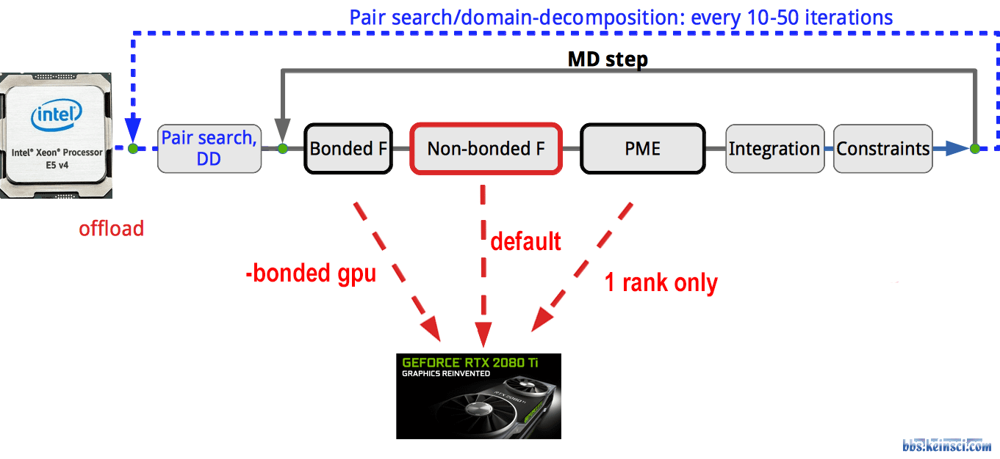
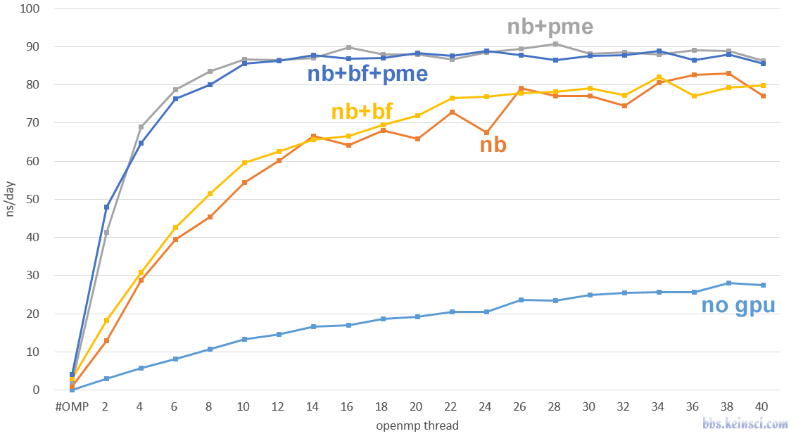
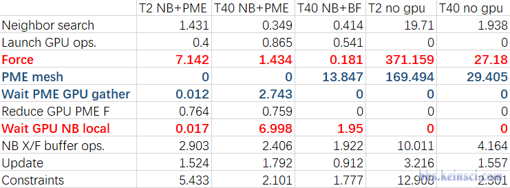
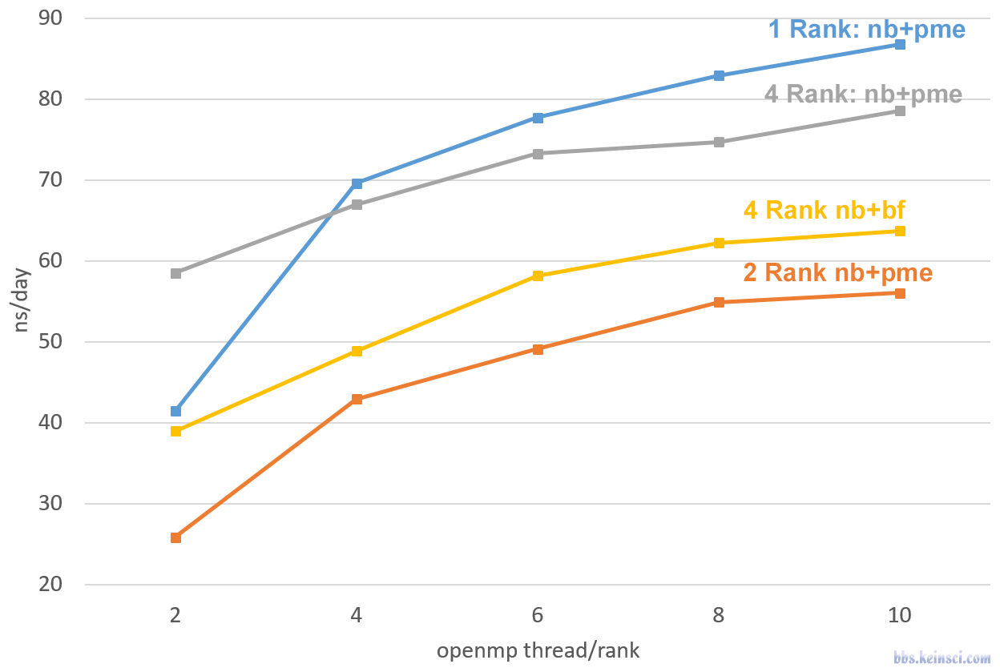
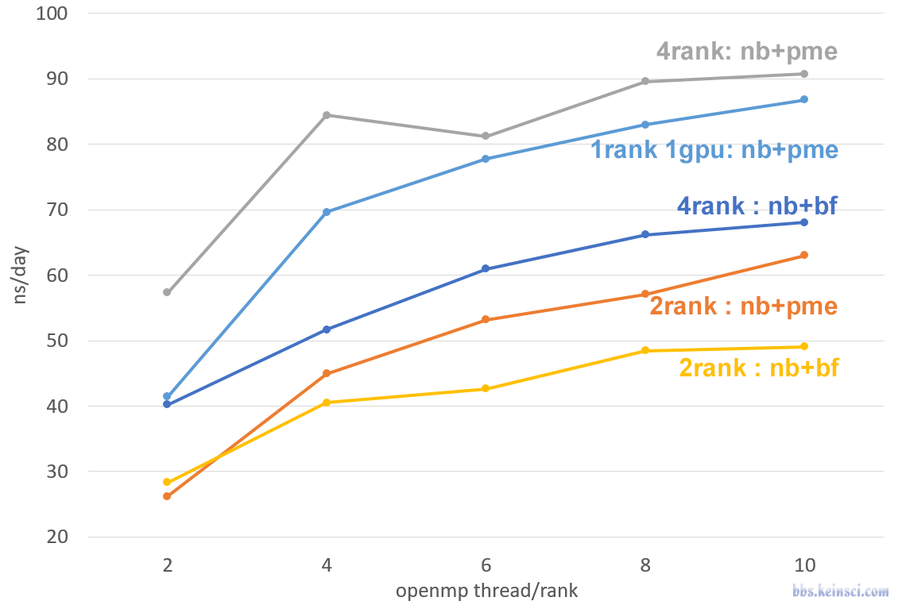
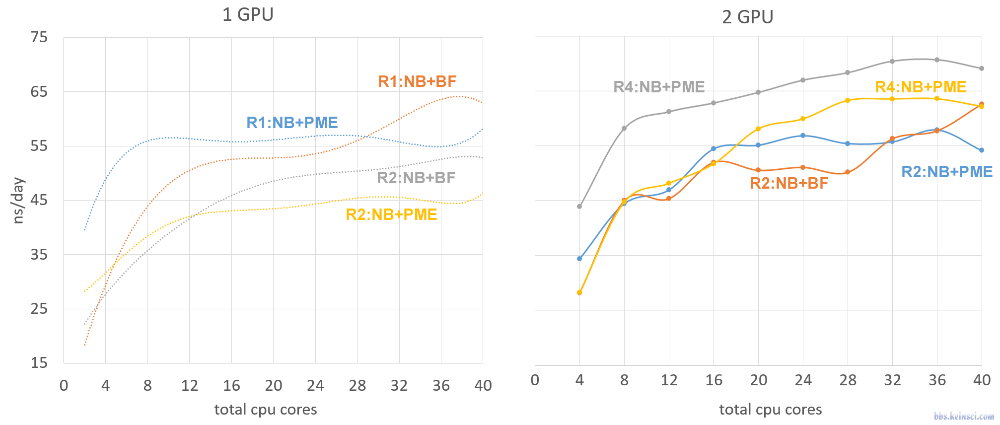
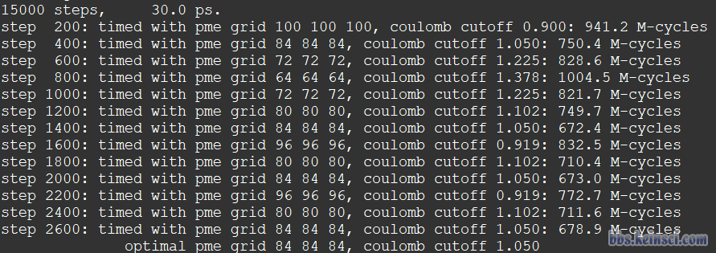
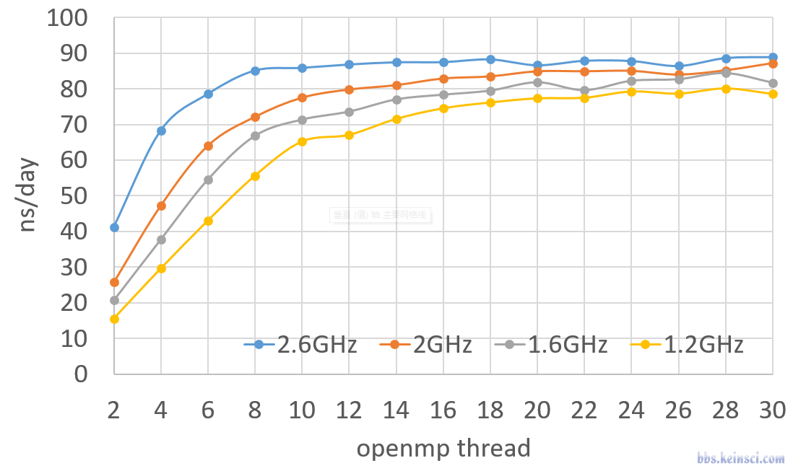
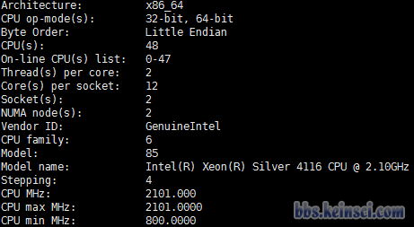
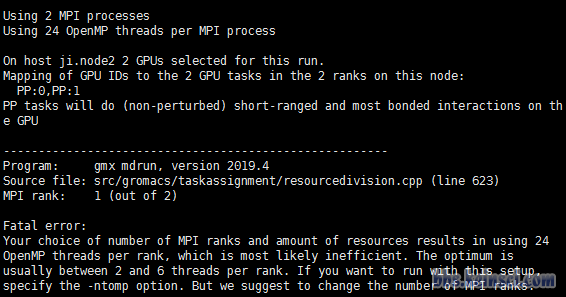
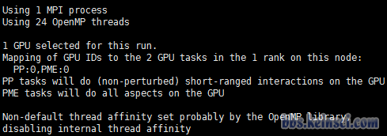
以上为本帖已下载的 11 个图片附件。